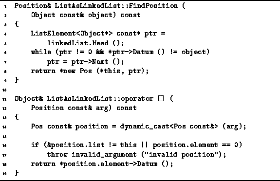

Data Structures and Algorithms
with Object-Oriented Design Patterns in C++
Data Structures and Algorithms
with Object-Oriented Design Patterns in C++
The FindPosition member function of the ListAsLinkedList
class is used to determine the position of an item in an ordered list
implemented as a linked list.
Its result is a reference to a Position.
Such a position can be used with the subscripting operator,
operator[] to access the item in the ordered list
found at the given position.
The FindPosition and operator[] member functions
are defined in Program 

Program: ListAsLinkedList Class FindPosition Member Function and Subscripting Operator Definitions
The FindPosition function takes as its lone argument
a const reference to an Object that is the target of the search.
The search algorithm used by FindPosition is identical to that of
Find, which is given in Program .
Consequently, the running time is the same:
where  is the time required to match to Objects,
and
is the time required to match to Objects,
and  is the number of items in the ordered list.
is the number of items in the ordered list.
The subscripting operator, operator[],
which takes as its subscript expression a reference to
a Position is also defined in Program .
This routine assumes that the position it is passed is
an instance of a ListAsLinkedList::Pos.
It simply dereferences the element pointer
contained in the ListAsLinkedList::Pos argument
to obtain the required item in the ordered list.
Assuming no exceptions are thrown,
the running time is clearly O(1).
 Copyright © 1997 by Bruno R. Preiss, P.Eng. All rights reserved.
Copyright © 1997 by Bruno R. Preiss, P.Eng. All rights reserved.